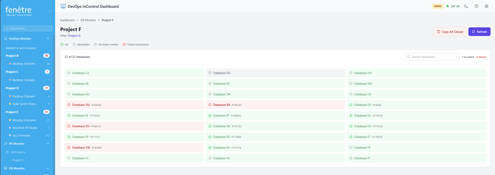

DB Project — Cleanup Tracking
A DB Project monitors a group of databases and tells you which ones can safely be cleaned up. It works by looking for Azure DevOps ticket numbers in database names and checking whether those tickets are still active.

Database cleanup status — red databases are linked to closed tickets and can likely be removed.
How It Works
Many teams include an Azure DevOps ticket number in their database names. For example, a database might be called ProjectX_12345_staging or test_67890. DevOps InControl automatically detects these ticket numbers and looks them up in Azure DevOps.
- If the ticket is still active (e.g. New, Active, Resolved), the database is fine — it is highlighted in green.
- If the ticket is Done, Closed, or Removed, the database is highlighted in red — this means the work is finished and the database can probably be cleaned up.
- If no ticket number is found in the database name, it appears in gray.
- If a database is on the allowlist, it has a white border and is skipped during checks — useful for permanent databases.
What the Colours Mean
| Colour | Meaning |
|---|---|
| Green | Linked ticket is still active — database is in use. |
| Red | Linked ticket is Done or Closed — database can probably be cleaned up. |
| Gray | No ticket number found in the database name. |
| White border | Database is on the allowlist (intentionally kept, not checked). |
How to Use It
- Open a DB Project from the DB Monitor screen.
- Click Check Rules to scan the databases and look up their linked tickets.
- Review the coloured grid. Red databases are candidates for cleanup.
- Click Copy All Closed to copy a list of all red databases to your clipboard — handy for sending to a DBA or creating a cleanup task.
- Hover over a database and click the copy icon to copy a single database name.
The Allowlist
Some databases should never be flagged for cleanup, even if their ticket is closed. You can add these to the allowlist. Allowlisted databases appear with a white border and are skipped during rule checks.
What You Can Change
| Setting | Where to Find It |
|---|---|
| DB Project name | Edit the DB Project from the DB Monitor screen. |
| Name filter | Filter which databases are included based on a keyword in their name (e.g. "staging" to only show staging databases). |
| Database server | Choose which configured server this project reads from (1, 2, or 3). |
| Allowlist | Add or remove databases from the allowlist directly on this screen. |
myapp_12345_test links to ticket #12345.